DESIGN &
DECIHello! I'm Vigna,
Lead UX DesignerDE
With 6+ years of experience, I turn complex, high-stakes workflows into products people actually want to use, across healthcare, analytics, logistics & enterprise. Currently leading UX for TruFlo, building omnichannel and AI-powered experiences from 0 to 1. Previously led a team of 3 on a UK care platform that improved task completion by 25%.
Featured Work
Let's build something worth using.
Open to Lead UX Designer and Senior Product Designer roles, plus select consulting. Always up for a good conversation.
Hi, I'm Vigna, Lead UX Designer
I've spent 6.5 years designing products that work for people navigating genuinely complex systems. My job isn't to make things pretty. It's to make sure the right person can do the right thing without friction getting in the way.

Warehousing · Industrial
People, Patterns, & Perspective
{{ s.h }}
{{ s.b }}
How I Think
Leading design at scale takes more than craft. It takes the ability to frame the right problem, navigate ambiguity, and orchestrate complex systems.
{{ p.h }}
{{ p.b }}
6+ years across complex systems
A series of deep dives across industries, always chasing the core human needs beneath the technical noise, and leading the design from discovery to shipped product.
{{ r.org }}
{{ r.period }}{{ r.desc }}
A point of view, not just a process
{{ b.h }}
{{ b.b }}
Let's talk.
Whether you have a role, a project, or just want to exchange ideas, I'm always open to a good conversation.
Independence for carers, built on invisible manual work.
Curam lets care receivers post jobs and independent carers choose which to take, better pay and autonomy than a traditional agency. I led design for ten months across the carer app, the receiver app, and the design system underneath both.
- →Stakeholders' working theory: carers were leaving because they weren't "tech-savvy enough."
- →My job was to test that theory first, a research-led engagement, not a straight redesign.
- →It turned out to be almost entirely wrong.
Formal research here is carer-side, carers were the group leaving, so that's where discovery started. But carer interviews kept surfacing problems only a care-receiver-facing redesign could fix. So this study also covers receiver-side design reasoning and the shared systems work. Every section is tagged with whose experience it covers.
I researched the whole carer lifecycle, not just onboarding.
Research covered the entire carer lifecycle because early conversations kept surfacing problems downstream of signup. Four methods, triangulated, each answered a different question.
Each area produced its own "How Might We" statements, the mechanism that let the team prioritise with stakeholders instead of guessing.
Carers weren't struggling with the interface. They were struggling with an absence of information the system already had but never surfaced, why a field was needed, whether a job was still open, why they'd been marked unavailable, when they'd get paid.
The other end of every conversation was an anxious family.
No formal interview study existed for care receivers; this side comes from what carer interviews revealed, plus product and stakeholder reasoning about who a care receiver actually is.
- →Care receivers are often older adults or family members arranging care for someone elderly, a very different comfort level with apps than the carers themselves.
- →Carers described receivers as slow to reply, unclear about what they needed, and hesitant to commit, all symptoms of one root cause: fear of messaging a stranger about a vulnerable family member.
- →That fear was rational: old messaging let either side start a chat, had no way to verify a meeting happened, and pushed both sides off-platform once things got serious, where Curam had no data or way to help.
Not formal receiver interviews or usability testing, design reasoning built from carer-side evidence and product judgment about an anxious, often older user base. Flagging that distinction deliberately.
Motivated by pay and flexibility, gone the moment either felt uncertain.
Drawn directly from interview transcripts, not assumptions.
- ·{{ t }}
- ·{{ t }}
- ·{{ t }}
- ·{{ t }}
Carer
A service blueprint, not a journey map.
The most useful artifact from discovery put Curam's manual back-office work in the same frame as the carer's experience.
- ✕Documents verified by hand, overseas, forged documents could slip through.
- ✕Job listings with no lapse detection, carers applied to jobs already filled.
- ✕An unannounced 48-hour "reply or go unavailable" rule enforced by a person, not the product.
- ✕Client payments manually reconciled to carer payouts, one at a time.
Several "carer engagement" problems weren't solvable with better copy, they needed the product to expose state the backend already had. That shaped what we could ship in ten months versus what needed a longer conversation with engineering.
Four workstreams, prioritised against two questions.
Too many problems for ten months and a team of three. We prioritised against: what's actually causing carers to leave or receivers to hesitate, and what can we influence without a backend rebuild?
{{ h.q }}
Four workstreams.
Structuring onboarding around trust, not just data collection
- →Replaced one long form with a segmented flow: identity & right-to-work, care experience, availability, payment setup.
- →Each step explains why the information is needed and shows visible progress.
- →Designed the first version of profile-completion status shown directly to the carer, replacing a generic "please complete your profile" email.
- →Clarified DBS requirements (Basic vs. Enhanced/Standard) and what to do if circumstances change, the #1 reason carers dropped off before ever reaching a job listing.
A care-receiver job dashboard that fixes what carers were reporting
- →Carer research found receivers posted vague requirements and left listings open after filling them, this redesigns the receiver's screens to fix both at the source.
- →Replaced "post and wait" with a guided next-step banner (Review → Message → Hire).
- →Always-visible advertised rate with plain-language fee explanation.
- →A recommended-carer list receivers can invite with one click, instead of waiting passively for applicants.
- →Added filtering by care type, language, and carer preference, the exact context carers said receivers never explained up front.
Redesigning messaging so a stranger feels safe to hire
The workstream with the clearest business case: every off-platform meeting or payment was a moment Curam had no data and no way to intervene. Four specific changes, each solving a named fear:
- →Only the care receiver can start a conversation, a carer can never cold-message a family, answering the most common fear directly.
- →Voice notes for receivers who find typing a barrier, common among older users setting up care for the first time.
- →An in-app meeting scheduler that logs the meeting to Curam, so if either side later reports an issue, the platform has a record instead of nothing.
- →Shift invoice, accept, and pay, inside the same thread. The receiver pays through a connected processor without leaving the conversation, and the thread flips to a "Hired!" state once payment clears.
Restricting carers from starting conversations costs them a sense of proactive control, a real trade-off, since flexibility is why carers choose Curam. I made it anyway: receiver-initiated messaging protects the trust relationship retention depends on most.
Rebuilding the design system for accessibility and speed
- →Replaced three inconsistent gray scales with one governed colour ramp (Neutral, Secondary, Negative, Gray — 9–11 steps each).
- →Checked every colour pairing against WCAG contrast ratios, up to AAA.
- →Defined one type scale with sizes, weights, and letter-spacing per role.
- →Specced every nav, dropdown, and menu item across 5 interaction states: default, hover, active, pressed, focused.
Four trust features, each solving a named fear.
{{ m.title }}
{{ m.body }}


Payment routes to a connected third-party processor, Curam never touches card details directly, but the application, scheduling, hire, and trust & safety states all stay inside the same thread.
The sticky-note flow, formalised into the receiver's dashboard.
The job-posting-to-hire flow, whiteboarded sticky-note by sticky-note before any screen was drawn, then built as the receiver's job dashboard.
The dashboard's "What next?" strip replaced a blank waiting state with an explicit review → message → hire path.
The trust artifact, and the path to that first message.
.png)
Every credential, DBS level, interview status, photo verification, qualifications, client recommendations, is visible before a receiver has to decide whether to trust a stranger.
.png)


Bulk-selecting carers to message, with suggested phrasing, lowered the effort of writing a first message to several strangers at once, while trust statistics stayed visible the whole way through.
One accessible source of truth for both sides.
- ✕{{ b }}
- ✓{{ b }}
How I kept a distributed team aligned for ten months.
- →{{ l }}
How impact was measured, and what changed.
Google Analytics funnel reports gave a before/after view of where carers dropped off. Hotjar heatmaps and recordings confirmed whether specific pre-launch hesitation points, like stalling on document upload, eased once the segmented flow shipped.
{{ c.body }}
- ✓{{ o }}
Note: specific before/after percentages from Curam's GA and Hotjar dashboards weren't retained after the engagement ended, so this study reports the measurement approach and the changes it drove rather than invented figures.
What I'd keep, and what I'd change.
{{ r.h }}
{{ r.p }}
The most important decision wasn't a UI choice, it was reframing the root cause as trust and hidden information, not tech-savviness. That clarity is the difference between a redesign that ships and one that actually works, on both sides of the marketplace.
{{ s.heading }}
{{ p }}
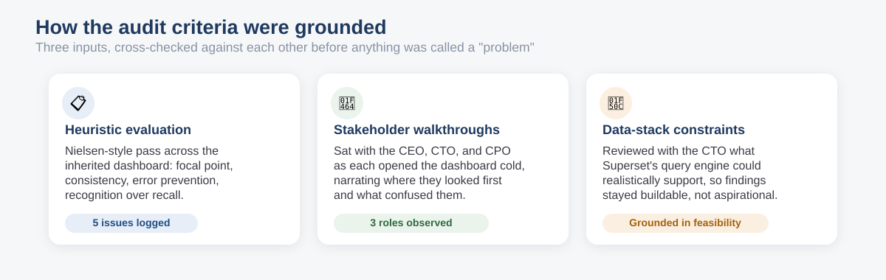
{{ c.t }}
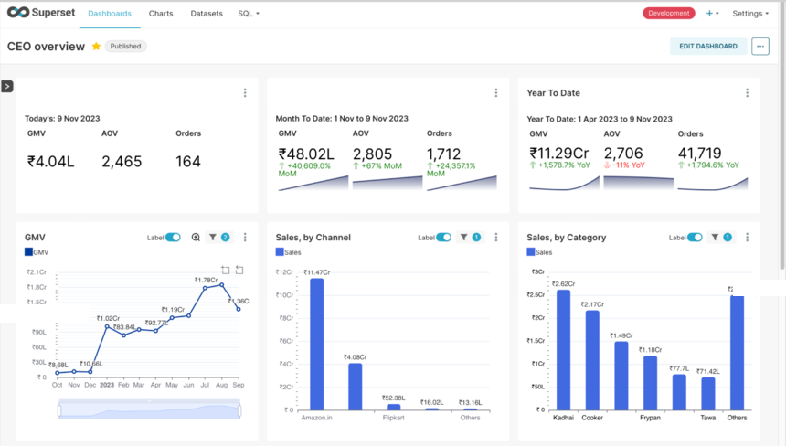
{{ c.t }}
{{ s.closing }}
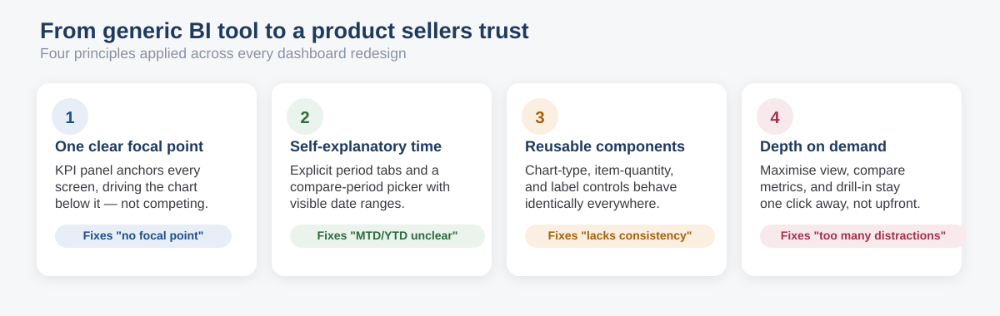
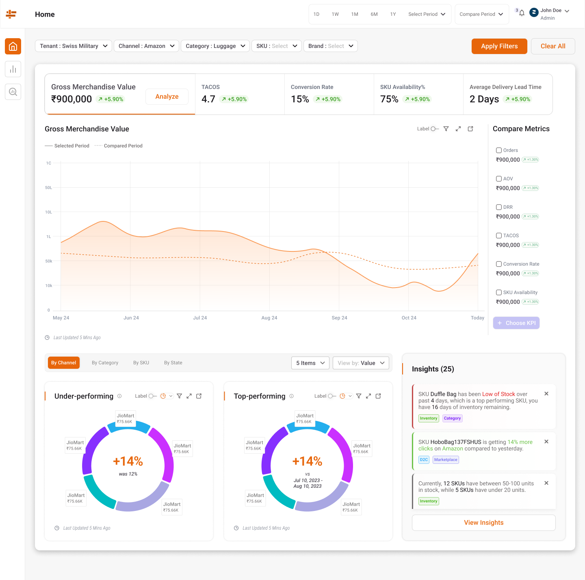
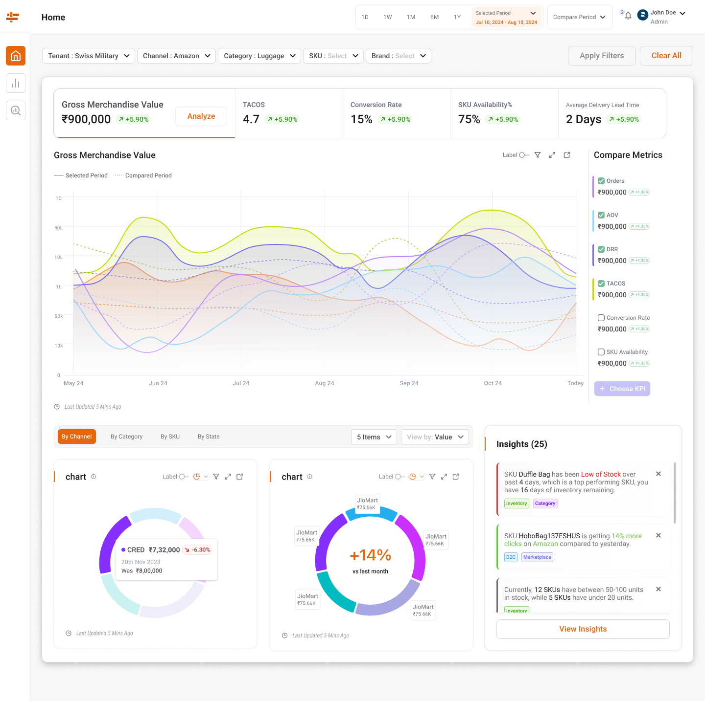
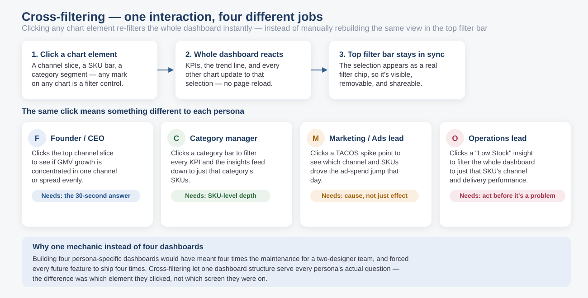
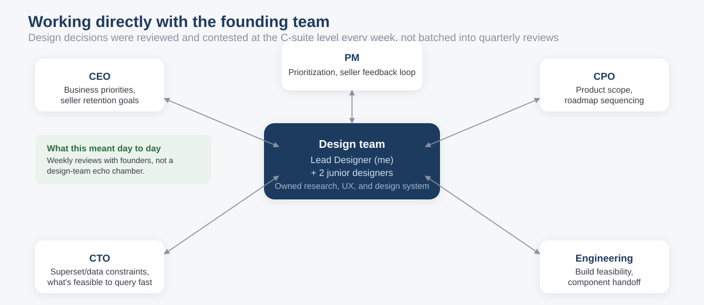
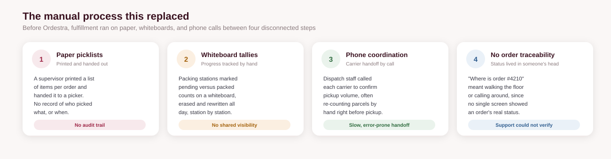
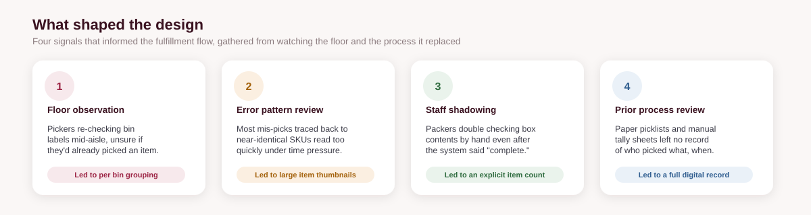
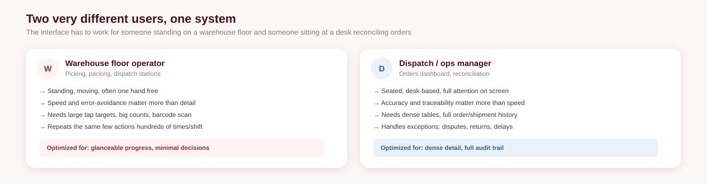
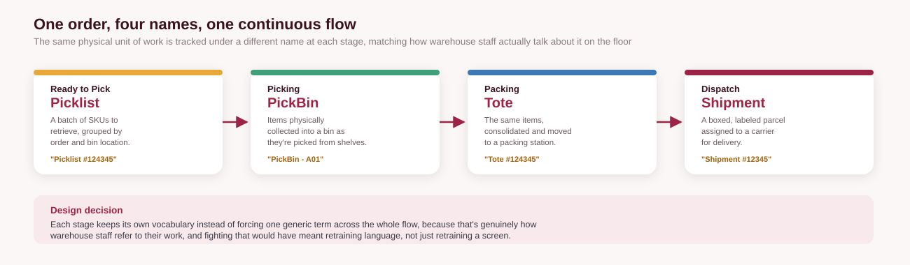
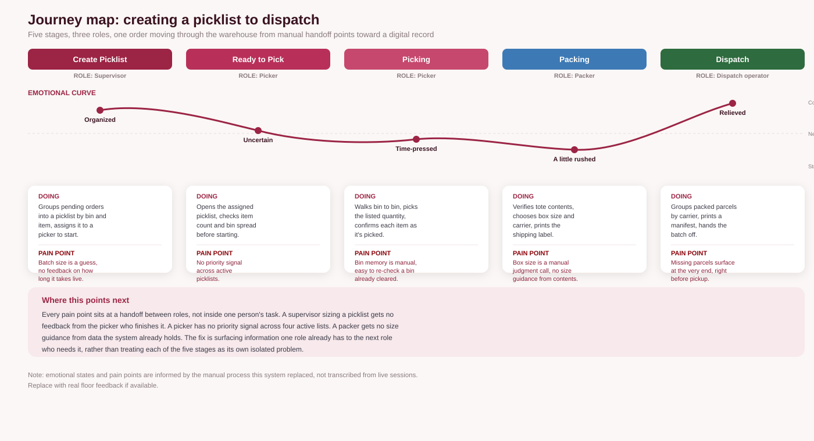
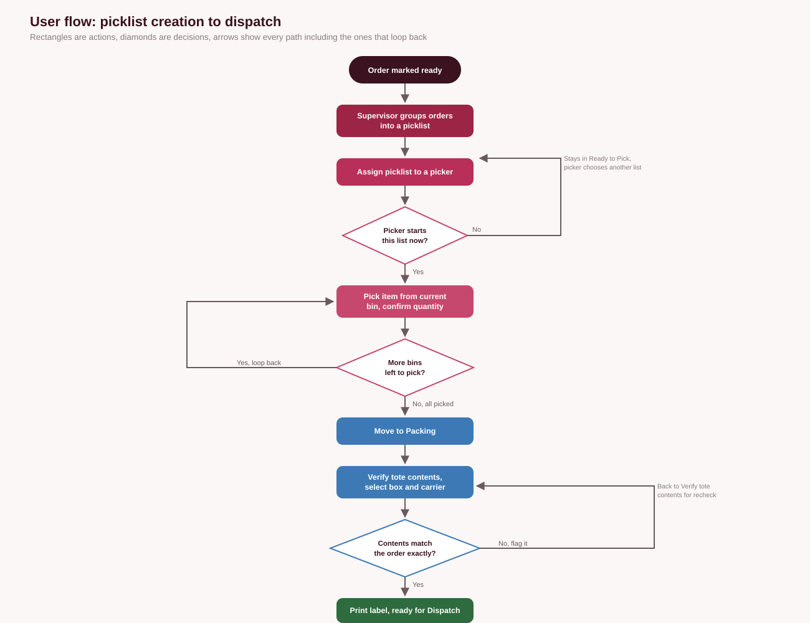
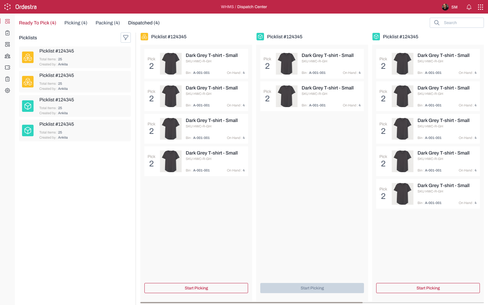
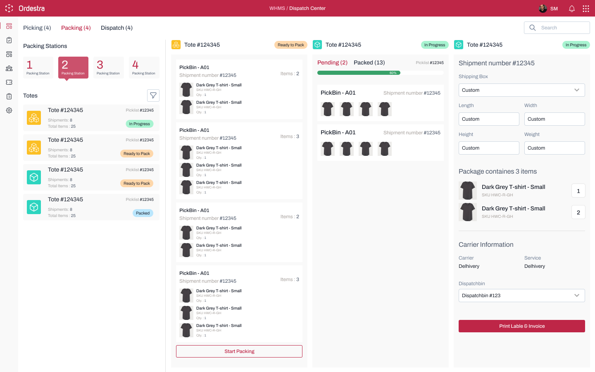
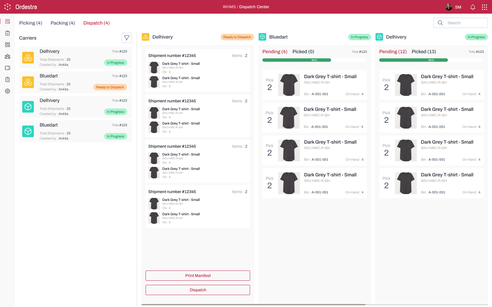
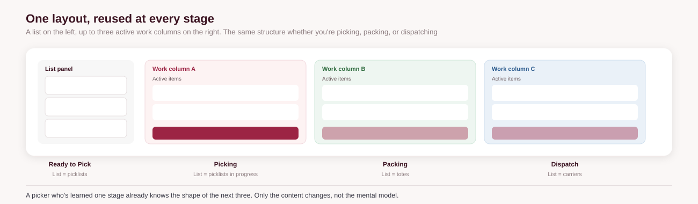
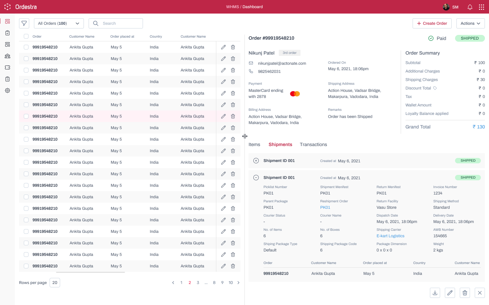
- →{{ b }}
{{ cd.h }}
{{ cd.b }}
{{ cs.reflection }}